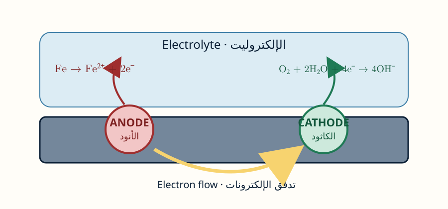
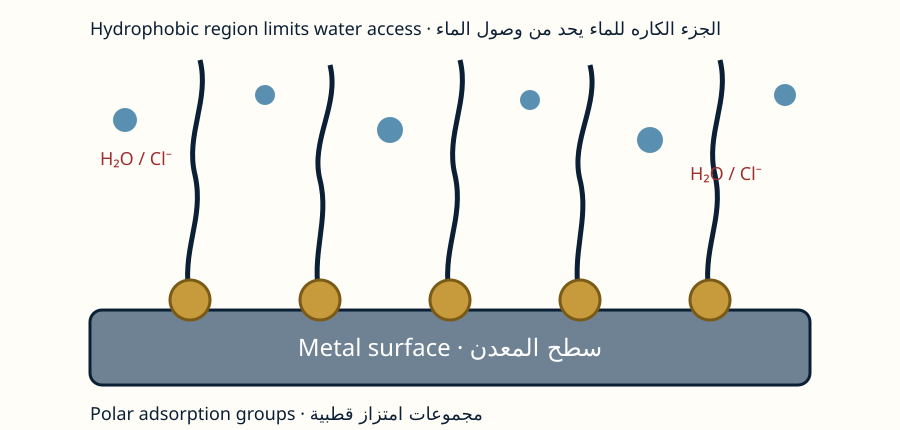
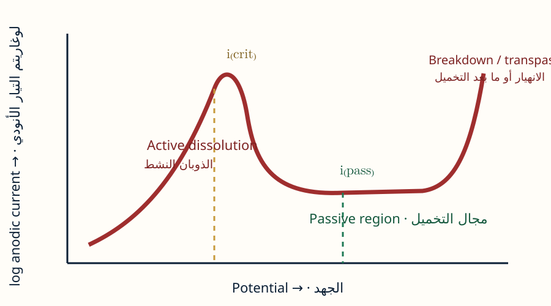
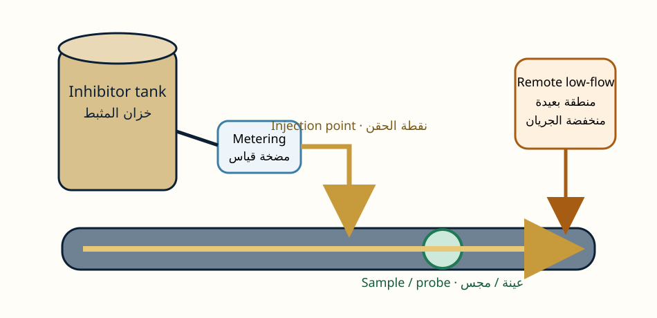

This upper-level course develops the scientific and engineering basis for selecting, testing, applying, monitoring, and managing corrosion inhibitors. It treats inhibitors as part of a complete material–environment–process system and integrates quantitative electrochemistry, interfacial chemistry, industrial formulation, safety, and environmental evaluation.
COMPLETE BILINGUAL UNIVERSITY COURSE · مقرر جامعي متكامل ثنائي اللغة
Corrosion Inhibitors
مثبطات التآكل
A rigorous learning environment covering electrochemical foundations, adsorption, passivation, organic and inorganic inhibitors, experimental evaluation, industrial application, environmental qualification, and corrosion-management design.
بيئة تعلم أكاديمية تغطي الأسس الكهروكيميائية والامتزاز والتخميل والمثبطات العضوية وغير العضوية والتقييم التجريبي والتطبيق الصناعي والتأهيل البيئي وتصميم إدارة التآكل.
12Modules · وحدات
6Laboratories · مختبرات
36Quiz items · أسئلة
3Credits · ساعات
Progress · التقدم
0 / 12 modules
COURSE SPECIFICATION · توصيف المقرر
Course description · وصف المقرر
يطور هذا المقرر المتقدم الأساس العلمي والهندسي لاختيار مثبطات التآكل واختبارها وتطبيقها ومراقبتها وإدارتها. ويتعامل مع المثبط بوصفه جزءاً من منظومة المادة والبيئة والعملية، ويجمع بين الكهروكيمياء الكمية وكيمياء السطح والصياغة الصناعية والسلامة والتقييم البيئي.
Course codeCORR 442
Provisional — institutional verification required.
Provisional — institutional verification required.
LevelUpper undergraduate / introductory postgraduate
Credits3 credits; 42–45 contact hours
Independent study75–90 hours
Duration15 teaching weeks
FormatBlended bilingual course
PrerequisitesGeneral chemistry, materials science, basic electrochemistry
InstitutionProvisional placeholder — verify locally
How to use this course · كيفية استخدام المقرر
- Complete the diagnostic test in the assessment section.
- Study modules in sequence; equations and essential content remain visible.
- Use reveal controls for worked solutions after attempting the problem.
- Complete the quick quiz and mark the module complete.
- Use calculators only after writing the governing equation.
- Use print/PDF controls to create a revision copy.
- أكمل الاختبار التشخيصي في قسم التقييم.
- ادرس الوحدات بالترتيب؛ تبقى المعادلات والمادة الأساسية ظاهرة.
- اكشف الحلول بعد محاولة المسألة.
- أكمل الاختبار السريع وحدد الوحدة كمكتملة.
- استخدم الحاسبات بعد كتابة المعادلة الحاكمة.
- استخدم الطباعة أو PDF لإنشاء نسخة مراجعة.
Source governance · حوكمة المصادر
The primary conceptual sequence follows Sastri [1]. Sastri [2] expands electrochemistry, adsorption, monitoring, industrial applications, and environmental testing. Flick [3] provides historical industrial formulation and application context. Original diagrams in this site are conceptual course drawings; no copyrighted textbook figures are embedded. Current product safety, availability, regulations, and supplier instructions must be verified before practice.
يتبع التسلسل المفاهيمي الأساسي مرجع ساستري [1]، ويوسع ساستري [2] الكهروكيمياء والامتزاز والمراقبة والتطبيقات والاختبارات البيئية، ويوفر فليك [3] سياقاً تاريخياً للصياغات والتطبيقات. الرسوم أصلية ومفاهيمية ولا تتضمن أشكال الكتب المحمية. يجب التحقق من السلامة والتوافر واللوائح وتعليمات المورد الحالية قبل التطبيق.
AIMS AND INTENDED LEARNING OUTCOMES · الأهداف ومخرجات التعلم
Course aims · أهداف المقرر
Develop a mechanistic and quantitative understanding of corrosion inhibition; build competence in testing and interpretation; and prepare students to design safe, monitored, economically and environmentally defensible industrial treatment programmes.
تطوير فهم آلي وكمي للتثبيط، وبناء الكفاءة في الاختبار والتفسير، وإعداد الطالب لتصميم برامج معالجة صناعية آمنة ومراقبة ومبررة اقتصادياً وبيئياً.
Intended learning outcomes · مخرجات التعلم المقصودة
- Explain corrosion-inhibitor purpose, terminology, classification, and limitations.شرح غرض المثبط ومصطلحاته وتصنيفه وقيوده.
- Apply electrochemical thermodynamics, kinetics, mixed-potential theory, and polarization methods.تطبيق الديناميكا والحركية الكهروكيميائية ونظرية الجهد المختلط وطرق الاستقطاب.
- Analyze adsorption, surface coverage, isotherms, and thermodynamic parameters.تحليل الامتزاز والتغطية والمتساويات والمعلمات الديناميكية الحرارية.
- Relate organic and inorganic inhibitor chemistry to interfacial mechanism.ربط كيمياء المثبطات العضوية وغير العضوية بآلية السطح.
- Select inhibitors for acidic, neutral, alkaline, and multiphase environments.اختيار المثبطات للأوساط الحمضية والمتعادلة والقلوية ومتعددة الأطوار.
- Design representative testing and monitoring programmes.تصميم برامج اختبار ومراقبة ممثلة.
- Interpret mass-loss, polarization, LPR, EIS, residual, inspection, and surface-analysis data.تفسير فقد الكتلة والاستقطاب وLPR وEIS والمتبقي والفحص وتحليل السطح.
- Calculate dose, injection rate, mass balance, efficiency, and basic economics.حساب الجرعات ومعدل الحقن وموازنة الكتلة والكفاءة والاقتصاد الأساسي.
- Evaluate safety, toxicity, biodegradation, environmental fate, and waste.تقييم السلامة والسمية والتحلل الحيوي والمصير البيئي والنفايات.
- Design an integrated industrial corrosion-inhibitor management plan.تصميم خطة صناعية متكاملة لإدارة مثبط التآكل.
- Communicate technical reasoning in Arabic and English.التواصل التقني بالعربية والإنجليزية.
- Identify uncertainty, evidence gaps, and conditions requiring requalification.تحديد عدم اليقين وفجوات الأدلة والحالات التي تستلزم إعادة التأهيل.
01
MODULE 01 · الوحدة 01
Introduction, Purpose, and Classification
المقدمة والغرض والتصنيف
Learning outcomes
- Define a corrosion inhibitor and distinguish inhibition from complete corrosion prevention.
- Calculate inhibition efficiency and residual corrosion rate.
- Classify inhibitors by mechanism, chemistry, phase, and application.
- Recognize concentration, temperature, flow, safety, and compatibility limitations.
مخرجات التعلم
- تعريف مثبط التآكل والتمييز بين التثبيط والمنع الكامل للتآكل.
- حساب كفاءة التثبيط ومعدل التآكل المتبقي.
- تصنيف المثبطات حسب الآلية والتركيب والطور والتطبيق.
- تمييز قيود التركيز والحرارة والجريان والسلامة والتوافق.
A corrosion inhibitor is a substance that reduces the corrosion rate when present at a suitable concentration in a defined material–environment system. The definition is deliberately conditional: an inhibitor may be effective for carbon steel in hydrochloric acid and ineffective for aluminium in alkaline solution. It may also lose protection when diluted, heated, degraded, or prevented from reaching the surface.
مثبط التآكل مادة تقلل معدل التآكل عند وجودها بتركيز مناسب ضمن منظومة محددة من المادة والبيئة. والتعريف مشروط عمداً؛ فقد ينجح المثبط مع الفولاذ الكربوني في حمض الهيدروكلوريك ويفشل مع الألومنيوم في وسط قلوي، كما قد يفقد الحماية عند التخفيف أو التسخين أو التحلل أو عدم وصوله إلى السطح.
Industrial inhibition is therefore a controlled treatment rather than a property of a molecule alone. The engineer must specify the material, corrosive medium, active ingredient, dose, application method, monitoring strategy, and acceptable residual damage.
لذلك فإن التثبيط الصناعي معالجة مضبوطة وليس خاصية للجزيء وحده. يجب تحديد المادة والوسط والمادة الفعالة والجرعة وطريقة التطبيق والمراقبة ومقدار الضرر المتبقي المقبول.

Core concepts · المفاهيم الأساسية
Purpose
الغرض
Reduce general corrosion, localized penetration, hydrogen generation, contamination, or damage during cleaning and storage.
تقليل التآكل العام أو الاختراق الموضعي أو تولد الهيدروجين أو التلوث أو الضرر أثناء التنظيف والتخزين.
Classification
التصنيف
Useful schemes include anodic/cathodic/mixed; organic/inorganic; adsorption/passivation/precipitation/scavenging; and continuous/batch/temporary application.
تشمل المخططات المفيدة: أنودي/كاثودي/مختلط، عضوي/غير عضوي، امتزاز/تخميل/ترسيب/إزالة متفاعل، وتطبيق مستمر/دُفعي/مؤقت.
Critical concentration
التركيز الحرج
Below a minimum protective concentration the treatment may be ineffective; underdosed passivators may intensify localized attack.
قد تكون المعالجة غير فعالة تحت الحد الأدنى، وقد تزيد الجرعة الناقصة من المثبط المخمّل التآكل الموضعي.
Residual rate
المعدل المتبقي
A large percentage reduction can still leave an unacceptable absolute corrosion rate when the blank rate is high.
قد تترك النسبة العالية من الخفض معدل تآكل مطلقاً غير مقبول عندما يكون المعدل المرجعي مرتفعاً.
System compatibility
توافق المنظومة
The inhibitor must not cause scale, foam, emulsion, residue, material attack, process contamination, or unacceptable waste.
يجب ألا يسبب المثبط قشوراً أو رغوة أو مستحلباً أو بقايا أو هجوماً على مواد أخرى أو تلوثاً للعملية أو نفايات غير مقبولة.
Key relationships · العلاقات الأساسية
| Equation · المعادلة | Meaning · المعنى |
|---|---|
| IE(%) = ((CR₀ − CRᵢ) / CR₀) × 100 | Inhibition efficiency from corrosion rates.كفاءة التثبيط من معدلات التآكل. |
| CRᵢ = CR₀(1 − IE/100) | Residual rate corresponding to a stated efficiency.معدل التآكل المتبقي الموافق لكفاءة محددة. |
| m = C V | Basic dose relationship using consistent units.علاقة الجرعة الأساسية بوحدات متسقة. |
Worked example · مثال محلول
A blank rate is 2.40 mm y⁻¹ and the inhibited rate is 0.36 mm y⁻¹. IE = (2.40−0.36)/2.40×100 = 85%. If the allowable rate is 0.20 mm y⁻¹, the treatment still fails the acceptance criterion despite its high efficiency.
معدل الحالة المرجعية 2.40 مم/سنة والمعدل بوجود المثبط 0.36 مم/سنة. تكون الكفاءة 85%. إذا كان الحد المسموح 0.20 مم/سنة فإن المعالجة لا تزال غير مقبولة رغم الكفاءة العالية.
Common misconception · مفهوم خاطئ
Misconception: “More inhibitor is always better.” Correction: overdosing can cause precipitation, foaming, contamination, cost, and environmental loading.
مفهوم خاطئ: «زيادة المثبط أفضل دائماً». التصحيح: قد تسبب الجرعة الزائدة ترسيباً ورغوة وتلوثاً وتكلفة وعبئاً بيئياً.
Learning activity · نشاط تعلم
Create a one-page material–environment–inhibitor definition for an assigned system and list the minimum evidence needed before claiming successful inhibition.
أنشئ تعريفاً من صفحة واحدة لمنظومة المادة–البيئة–المثبط وحدد الحد الأدنى من الأدلة المطلوبة قبل ادعاء نجاح التثبيط.
Quick mastery check · تحقق سريع من الإتقان
02
MODULE 02 · الوحدة 02
Electrochemical Foundations
الأسس الكهروكيميائية
Learning outcomes
- Write coupled anodic and cathodic reactions.
- Explain corrosion potential, polarization, and mixed-potential theory.
- Use Nernst, Tafel, and Stern–Geary relationships correctly.
- Interpret how anodic, cathodic, and mixed inhibitors alter polarization behaviour.
مخرجات التعلم
- كتابة التفاعلات الأنودية والكاثودية المقترنة.
- شرح جهد التآكل والاستقطاب ونظرية الجهد المختلط.
- استخدام علاقات نرنست وتافل وسترن–جيري بصورة صحيحة.
- تفسير أثر المثبطات الأنودية والكاثودية والمختلطة في منحنيات الاستقطاب.
Aqueous corrosion requires oxidation and reduction to proceed simultaneously. At an anodic region the metal releases electrons; at a cathodic region a species such as H⁺ or O₂ consumes them. The freely corroding potential is the mixed potential at which total anodic and cathodic currents balance.
يتطلب التآكل المائي حدوث الأكسدة والاختزال معاً. يطلق المعدن الإلكترونات في المنطقة الأنودية وتستهلكها أنواع مثل +H أو O₂ في المنطقة الكاثودية. جهد التآكل الحر هو الجهد المختلط الذي تتوازن عنده التيارات الأنودية والكاثودية الكلية.
An inhibitor reduces corrosion by changing one or more partial reactions, mass-transfer conditions, interfacial structure, or passive-film stability. A potential shift alone is not a corrosion-rate measurement; the current at the intersection and supporting evidence are required.
يخفض المثبط التآكل بتغيير تفاعل جزئي أو أكثر أو انتقال الكتلة أو البنية البينية أو ثبات الغشاء المخمّل. ولا يعد تغير الجهد وحده قياساً لمعدل التآكل؛ بل يلزم تيار التقاطع وأدلة مساندة.
Core concepts · المفاهيم الأساسية
Mixed potential
الجهد المختلط
The corrosion potential satisfies Σiₐ = Σ|i꜀|. The corresponding current density is related to the corrosion rate.
يحقق جهد التآكل Σiₐ = Σ|i꜀|، وترتبط كثافة التيار عند التقاطع بمعدل التآكل.
Polarization
الاستقطاب
Activation, concentration, and ohmic polarization displace an electrode from equilibrium and control the measured current.
يزيح استقطاب التنشيط أو التركيز أو المقاومة الأومية القطب عن الاتزان ويتحكم في التيار المقاس.
Tafel behaviour
سلوك تافل
In suitable activation-controlled regions, overpotential varies linearly with log current. Inhibitor films may make clear Tafel regions unavailable.
في مجالات تنشيط مناسبة تتغير زيادة الجهد خطياً مع لوغاريتم التيار، وقد تمنع أغشية المثبط ظهور مجال تافل واضح.
LPR
المقاومة الخطية
A small perturbation near E_corr gives Rₚ = dE/di; the Stern–Geary constant converts Rₚ to i_corr.
يعطي الاضطراب الصغير قرب جهد التآكل Rₚ = dE/di، ويحول ثابت سترن–جيري Rₚ إلى i_corr.
Oxygen transport
انتقال الأكسجين
In aerated neutral water, oxygen reduction may reach a diffusion-limited current controlled by concentration, diffusivity, and boundary-layer thickness.
في الماء المتعادل المهواة قد يصل اختزال الأكسجين إلى تيار محدود بالانتشار تتحكم فيه التراكيز والانتشار وسمك طبقة الانتشار.
Key relationships · العلاقات الأساسية
| Equation · المعادلة | Meaning · المعنى |
|---|---|
| E = E° − (RT/nF) ln Q | Nernst equation for equilibrium potential.معادلة نرنست لجهد الاتزان. |
| η = β log(i/i₀) | Tafel form in an activation-controlled region.صيغة تافل في مجال محكوم بالتنشيط. |
| i_corr = B/Rₚ | Stern–Geary relationship.علاقة سترن–جيري. |
Worked example · مثال محلول
With B = 0.026 V and Rₚ = 25,000 Ω·cm², i_corr = 1.04×10⁻⁶ A·cm⁻² = 1.04 μA·cm⁻². If inhibitor addition raises Rₚ while B remains approximately valid, the estimated uniform corrosion current decreases.
عند B = 0.026 فولت وRₚ = 25000 أوم·سم² تكون i_corr = 1.04 ميكروأمبير/سم². إذا رفعت إضافة المثبط Rₚ وبقي B صالحاً تقريباً فإن تيار التآكل المنتظم المقدر ينخفض.
Common misconception · مفهوم خاطئ
Misconception: “A noble shift in E_corr proves protection.” Correction: the shift may also result from an accelerated cathodic reaction or an oxidizing contaminant.
مفهوم خاطئ: «الانزياح نحو جهد أنبل يثبت الحماية». التصحيح: قد ينتج أيضاً من تسارع التفاعل الكاثودي أو وجود ملوث مؤكسد.
Learning activity · نشاط تعلم
Use the interactive polarization simulator to compare equal-current reduction with anodic, cathodic, and small potential shifts. Explain why the classification remains preliminary.
استخدم محاكي الاستقطاب لمقارنة خفض التيار مع انزياحات أنودية وكاثودية وصغيرة، واشرح سبب بقاء التصنيف أولياً.
Quick mastery check · تحقق سريع من الإتقان
03
MODULE 03 · الوحدة 03
Adsorption at Metal–Solution Interfaces
الامتزاز عند السطح الفاصل بين المعدن والمحلول
Learning outcomes
- Explain surface coverage and competitive adsorption.
- Compare physisorption and chemisorption without rigid oversimplification.
- Relate donor atoms, charge, molecular orientation, and hydrophobicity to film formation.
- Identify direct and indirect evidence for an adsorbed inhibitor film.
مخرجات التعلم
- شرح التغطية السطحية والامتزاز التنافسي.
- مقارنة الامتزاز الفيزيائي والكيميائي دون تبسيط جامد.
- ربط الذرات المانحة والشحنة واتجاه الجزيء وكراهية الماء بتكوين الغشاء.
- تحديد الأدلة المباشرة وغير المباشرة على غشاء المثبط الممتز.
Adsorption places inhibitor species at the metal–solution interface, where a small amount of material can influence a large electrochemical area. The adsorbed layer may block active sites, displace interfacial water, alter the double layer, reduce charge transfer, or participate in a more complex oxide–organic film.
يضع الامتزاز أنواع المثبط عند السطح الفاصل بين المعدن والمحلول، حيث يمكن لكمية صغيرة أن تؤثر في مساحة كهروكيميائية كبيرة. وقد تحجب الطبقة المواقع النشطة أو تزح الماء البيني أو تغير الطبقة المزدوجة أو تخفض انتقال الشحنة أو تدخل في غشاء معقد من الأكسيد والمادة العضوية.
The species present at the surface may differ from the material added to the bulk solution. Protonation, complexation, hydrolysis, competitive anion adsorption, and corrosion-product reactions must therefore be considered.
قد تختلف الأنواع الموجودة على السطح عن المادة المضافة للمحلول؛ لذلك يجب مراعاة البروتنة والتعقيد والتحلل المائي وامتزاز الأنيونات المنافسة وتفاعلات نواتج التآكل.

Core concepts · المفاهيم الأساسية
Surface coverage
التغطية السطحية
θ ranges from 0 to 1 and is often estimated from corrosion-rate reduction, although this is a model-dependent approximation.
تتراوح θ بين 0 و1 وتقدر كثيراً من خفض معدل التآكل، وهو تقريب يعتمد على النموذج.
Physical adsorption
الامتزاز الفيزيائي
Electrostatic and dispersion interactions are usually less surface-specific and often more reversible.
تعتمد التآثرات الكهروستاتيكية وقوى التشتت عادةً على خصوصية سطحية أقل وتكون أكثر عكوسية.
Chemical adsorption
الامتزاز الكيميائي
Electron donation, back-donation, or coordinate interaction may produce stronger, more specific bonding.
قد يؤدي منح الإلكترونات أو الارتداد الإلكتروني أو التناسق إلى روابط أقوى وأكثر خصوصية.
Molecular orientation
اتجاه الجزيء
Planar molecules may cover broad areas; bulky substituents can hinder close packing; long chains can improve barrier character but reduce solubility.
قد تغطي الجزيئات المستوية مساحة كبيرة، وتعيق البدائل الضخمة الرص المحكم، وتحسن السلاسل الطويلة الحاجز لكنها قد تقلل الذوبانية.
Competition and synergy
التنافس والتآزر
Chloride, water, corrosion products, and co-inhibitors compete for sites. An adsorbed anion can sometimes bridge a protonated organic cation to the surface.
يتنافس الكلوريد والماء ونواتج التآكل والمثبطات المشاركة على المواقع، وقد يعمل الأنيون الممتز جسراً لكاتيون عضوي مبرتن.
Key relationships · العلاقات الأساسية
| Equation · المعادلة | Meaning · المعنى |
|---|---|
| θ ≈ (CR₀ − CRᵢ)/CR₀ | Common estimate of surface coverage from rate reduction.تقدير شائع للتغطية السطحية من خفض المعدل. |
| Inh_(aq) ⇌ Inh_(ads) | Dynamic adsorption–desorption equilibrium.اتزان ديناميكي بين الامتزاز والانفصال. |
| ΔG_ads = ΔH_ads − TΔS_ads | Thermodynamic relationship for adsorption.العلاقة الديناميكية الحرارية للامتزاز. |
Worked example · مثال محلول
If the blank current density is 100 μA·cm⁻² and the inhibited value is 25 μA·cm⁻², θ ≈ 0.75. This does not prove that exactly 75% of geometric area contains a uniform monolayer; it is an electrochemical estimate under the chosen model.
إذا كانت كثافة التيار المرجعية 100 ميكروأمبير/سم² وبوجود المثبط 25 ميكروأمبير/سم² فإن θ ≈ 0.75. ولا يثبت ذلك أن 75% تماماً من المساحة الهندسية مغطاة بطبقة أحادية متجانسة؛ بل هو تقدير كهروكيميائي وفق النموذج.
Common misconception · مفهوم خاطئ
Misconception: “Nitrogen always adsorbs better than oxygen.” Correction: accessibility, protonation, surface state, solvent, and molecular architecture may reverse simple donor-atom trends.
مفهوم خاطئ: «النيتروجين يمتز دائماً أفضل من الأكسجين». التصحيح: قد تعكس الإتاحة والبروتنة وحالة السطح والمذيب وبنية الجزيء الاتجاه البسيط.
Learning activity · نشاط تعلم
Sketch two plausible orientations for a heterocyclic inhibitor and predict how steric bulk and protonation would change surface coverage.
ارسم اتجاهين محتملين لمثبط حلقي غير متجانس وتنبأ بأثر الضخامة الفراغية والبروتنة في التغطية السطحية.
Quick mastery check · تحقق سريع من الإتقان
04
MODULE 04 · الوحدة 04
Adsorption Isotherms and Thermodynamics
متساويات الامتزاز والديناميكا الحرارية
Learning outcomes
- Fit and interpret Langmuir and alternative adsorption models.
- Calculate K_ads and standard adsorption free energy with consistent standard states.
- Distinguish adsorption thermodynamics from corrosion activation parameters.
- Evaluate fit quality, uncertainty, and model limitations.
مخرجات التعلم
- ملاءمة وتفسير نموذج لانغموير والنماذج البديلة.
- حساب K_ads وطاقة غيبس القياسية للامتزاز مع حالات قياسية متسقة.
- التمييز بين ديناميكا الامتزاز ومعلمات تنشيط التآكل.
- تقييم جودة الملاءمة وعدم اليقين وقيود النموذج.
An adsorption isotherm relates surface coverage to equilibrium inhibitor concentration at fixed temperature. It is a model of interfacial occupancy, not a decorative line fit. Each model contains assumptions about site uniformity, interaction among adsorbates, multilayer behaviour, and concentration dependence.
تربط متساوية الامتزاز التغطية السطحية بتركيز المثبط عند الاتزان ودرجة حرارة ثابتة. وهي نموذج لإشغال السطح وليست ملاءمة خطية زخرفية. يحتوي كل نموذج على افتراضات عن تجانس المواقع والتآثر بين الجزيئات والطبقات المتعددة واعتماد السلوك على التركيز.
A strong regression coefficient is useful but does not establish that the model is physically unique. Parameter plausibility, residual structure, uncertainty, surface evidence, and comparison with alternative models are required.
معامل الانحدار القوي مفيد لكنه لا يثبت تفرد النموذج فيزيائياً. يلزم فحص معقولية المعلمات وبنية البواقي وعدم اليقين والأدلة السطحية ومقارنة النماذج البديلة.
Core concepts · المفاهيم الأساسية
Langmuir
لانغموير
Assumes equivalent sites, monolayer occupancy, and no significant lateral interaction in its ideal form.
يفترض في صورته المثالية مواقع متكافئة وطبقة أحادية وعدم وجود تآثر جانبي مهم.
Temkin and Frumkin
تمكن وفرومكن
Represent changing adsorption energy or lateral interactions more explicitly.
يمثلان تغير طاقة الامتزاز أو التآثرات الجانبية بصورة أوضح.
Freundlich
فريندلش
An empirical heterogeneous-surface relationship; useful over limited concentration ranges.
علاقة تجريبية لسطح غير متجانس، تفيد ضمن مجال تركيز محدود.
Nonlinear fitting
الملاءمة غير الخطية
Often avoids distortions introduced by linearization and allows direct residual analysis.
تتجنب غالباً تشوهات التحويل الخطي وتسمح بتحليل البواقي مباشرةً.
Standard states
الحالات القياسية
K must be made dimensionless or handled through an explicit standard-state convention before calculating ΔG°.
يجب جعل K بلا أبعاد أو اعتماد اتفاق صريح للحالة القياسية قبل حساب ΔG°.
Key relationships · العلاقات الأساسية
| Equation · المعادلة | Meaning · المعنى |
|---|---|
| C/θ = 1/K_ads + C | Linear Langmuir form.الصيغة الخطية لمتساوية لانغموير. |
| ΔG°_ads = −RT ln K_ads | Standard adsorption free energy for a dimensionless K.طاقة غيبس القياسية للامتزاز عندما يكون K بلا أبعاد. |
| ln K_ads = −ΔH°_ads/(RT) + ΔS°_ads/R | Van’t Hoff relationship.علاقة فانت هوف. |
Worked example · مثال محلول
A Langmuir intercept of 0.020 L·mmol⁻¹ gives K_ads = 50 mmol·L⁻¹ in the reciprocal concentration convention. The constant must be converted using a consistent standard state before insertion into a logarithm for ΔG°.
يعطي الجزء المقطوع 0.020 لتر/مليمول قيمة K_ads = 50 لتر/مليمول وفق اتفاق مقلوب التركيز. ويجب تحويل الثابت وفق حالة قياسية متسقة قبل إدخاله في اللوغاريتم لحساب ΔG°.
Common misconception · مفهوم خاطئ
Misconception: “R² = 0.999 proves Langmuir adsorption.” Correction: it proves only that the chosen transformed data are nearly linear.
مفهوم خاطئ: «R² = 0.999 يثبت امتزاز لانغموير». التصحيح: يثبت فقط أن البيانات المحولة المختارة شبه خطية.
Learning activity · نشاط تعلم
Fit the same coverage dataset to Langmuir and Freundlich forms, inspect residuals, and write a one-paragraph model-selection argument.
لائم بيانات التغطية نفسها لنموذجي لانغموير وفريندلش، وافحص البواقي، واكتب حجة قصيرة لاختيار النموذج.
Quick mastery check · تحقق سريع من الإتقان
05
MODULE 05 · الوحدة 05
Anodic, Cathodic, Mixed, and Passivating Inhibitors
المثبطات الأنودية والكاثودية والمختلطة والمخمِّلة
Learning outcomes
- Classify inhibitors from polarization evidence.
- Explain active–passive transitions, critical current, and passive current.
- Recognize localized-corrosion risk from underdosed anodic passivators.
- Compare oxygen scavenging, cathodic precipitation, and mixed organic filming.
مخرجات التعلم
- تصنيف المثبطات من أدلة الاستقطاب.
- شرح الانتقال من النشاط إلى التخميل والتيار الحرج وتيار التخميل.
- تمييز خطر التآكل الموضعي الناتج من نقص جرعة المخمّل الأنودي.
- مقارنة إزالة الأكسجين والترسيب الكاثودي والتغليف العضوي المختلط.
Anodic inhibitors reduce metal dissolution or stabilize passivity. Cathodic inhibitors slow hydrogen evolution, oxygen reduction, or transport of a cathodic reactant. Mixed inhibitors affect both branches. These labels describe electrochemical response, not merely chemical composition.
تخفض المثبطات الأنودية ذوبان المعدن أو تثبت التخميل، وتبطئ المثبطات الكاثودية تطور الهيدروجين أو اختزال الأكسجين أو انتقال متفاعل كاثودي، بينما تؤثر المثبطات المختلطة في الفرعين. تصف هذه الأسماء الاستجابة الكهروكيميائية لا التركيب الكيميائي فقط.
Passivating inhibitors require special control because an insufficient dose can protect most of the surface while leaving a small active area that carries a high anodic current density. Average corrosion measurements may then appear acceptable while pits deepen.
تتطلب المخمّلات ضبطاً خاصاً لأن الجرعة غير الكافية قد تحمي معظم السطح وتترك مساحة نشطة صغيرة تحمل كثافة تيار أنودية مرتفعة. وقد يبدو متوسط التآكل مقبولاً بينما تتعمق الحفر.

Core concepts · المفاهيم الأساسية
Anodic control
التحكم الأنودي
Shifts the anodic branch toward lower current and may raise the potential into a passive region.
يزيح الفرع الأنودي نحو تيار أقل وقد يرفع الجهد إلى مجال التخميل.
Cathodic control
التحكم الكاثودي
Reduces cathodic kinetics or reactant transport; examples include precipitation at cathodic sites and oxygen scavenging.
يخفض حركية التفاعل الكاثودي أو انتقال متفاعله؛ ومن أمثلته الترسيب في المواقع الكاثودية وإزالة الأكسجين.
Mixed inhibition
التثبيط المختلط
Substantial reductions in both branches often produce a small E_corr shift with a large i_corr decrease.
يؤدي الخفض الواضح في الفرعين غالباً إلى انزياح صغير في جهد التآكل مع انخفاض كبير في تياره.
Passivation
التخميل
The active–passive curve contains i_crit and a lower i_pass; stability also depends on breakdown and repassivation.
يحتوي منحنى النشاط–التخميل على i_crit وi_pass الأقل، ويعتمد الثبات أيضاً على الانهيار وإعادة التخميل.
Localized risk
الخطر الموضعي
Chloride, crevices, deposits, and insufficient passivator concentration can destabilize an otherwise low-current passive surface.
قد يزعزع الكلوريد والشقوق والرواسب ونقص جرعة المخمّل سطحاً مخملاً منخفض التيار.
Key relationships · العلاقات الأساسية
| Equation · المعادلة | Meaning · المعنى |
|---|---|
| i_pass ≪ i_active | Current reduction in the passive condition.انخفاض التيار في حالة التخميل. |
| i_L = nFDC/δ | Diffusion-limited cathodic current.التيار الكاثودي المحدود بالانتشار. |
| 2SO₃²⁻ + O₂ → 2SO₄²⁻ | Simplified sulfite oxygen-scavenging reaction.تفاعل مبسط لإزالة الأكسجين بالسلفيت. |
Worked example · مثال محلول
A blank i_corr of 120 μA·cm⁻² falls to 18 μA·cm⁻² while E_corr shifts only −15 mV. IE = 85%; the small potential shift and suppression of both branches would support a preliminary mixed classification.
ينخفض i_corr من 120 إلى 18 ميكروأمبير/سم² مع انزياح جهد −15 ملي فولت فقط. تكون الكفاءة 85%، ويدعم الانزياح الصغير وخفض الفرعين تصنيفاً أولياً مختلطاً.
Common misconception · مفهوم خاطئ
Misconception: “A universal potential-shift threshold classifies every inhibitor.” Correction: classification should use the full polarization response and system-specific evidence.
مفهوم خاطئ: «حد انزياح جهدي عالمي يصنف كل مثبط». التصحيح: يجب استخدام استجابة الاستقطاب الكاملة وأدلة المنظومة.
Learning activity · نشاط تعلم
Given three polarization datasets, classify the dominant effect, identify uncertainty, and propose one surface method to test the film hypothesis.
صنف الأثر الغالب لثلاث مجموعات من بيانات الاستقطاب وحدد عدم اليقين واقترح طريقة سطحية لاختبار فرضية الغشاء.
Quick mastery check · تحقق سريع من الإتقان
06
MODULE 06 · الوحدة 06
Organic Inhibitors and Molecular Structure
المثبطات العضوية والبنية الجزيئية
Learning outcomes
- Relate functional groups, donor atoms, aromaticity, planarity, and chain length to inhibition.
- Calculate protonation ratios and basic quantum descriptors.
- Explain the roles of solubility, aggregation, temperature stability, and formulation.
- Evaluate structure–activity claims without treating computed descriptors as proof.
مخرجات التعلم
- ربط المجموعات الوظيفية والذرات المانحة والعطرية والاستواء وطول السلسلة بالتثبيط.
- حساب نسب البروتنة والواصفات الكمية الأساسية.
- شرح أدوار الذوبانية والتجمع والثبات الحراري والصياغة.
- تقييم ادعاءات العلاقة بين البنية والنشاط دون اعتبار الحسابات إثباتاً.
Organic inhibitors often combine a polar surface-active region with an aromatic body or hydrophobic chain. Nitrogen, sulfur, oxygen, and phosphorus atoms; π systems; charge; and molecular geometry influence adsorption, but performance also depends on speciation, solvent, oxide condition, and transport.
تجمع المثبطات العضوية غالباً بين جزء قطبي نشط سطحياً وجسم عطري أو سلسلة كارهة للماء. تؤثر ذرات النيتروجين والكبريت والأكسجين والفوسفور والأنظمة π والشحنة والهندسة الجزيئية في الامتزاز، لكن الأداء يعتمد أيضاً على الأنواع الكيميائية والمذيب وحالة الأكسيد والانتقال.
The best molecule on a quantum-chemical ranking can fail as a product if it is insoluble, unstable, highly toxic, incompatible, or unable to reach the water-wet surface. Formulation converts molecular activity into usable industrial treatment.
قد يفشل الجزيء الأعلى في ترتيب الحسابات الكمية كمنتج إذا كان قليل الذوبان أو غير ثابت أو ساماً أو غير متوافق أو لا يصل إلى السطح المبتل بالماء. تحول الصياغة النشاط الجزيئي إلى معالجة صناعية قابلة للاستخدام.
Core concepts · المفاهيم الأساسية
Amines and protonation
الأمينات والبروتنة
Basic nitrogen sites may protonate in acid. Both neutral and protonated forms can contribute through different interactions.
قد تبرتن مواقع النيتروجين القاعدية في الحمض، ويمكن للصيغتين المتعادلة والمبرتنة أن تسهما بآليات مختلفة.
Heterocycles and π systems
الحلقات غير المتجانسة وأنظمة π
Azoles, imidazolines, and related structures can offer several donor sites and broad surface interaction.
قد توفر الأزولات والإيميدازولينات تراكيب متعددة المواقع ومساحة تفاعل كبيرة.
Sulfur-containing inhibitors
المثبطات المحتوية على الكبريت
Polarizable sulfur can interact strongly with some metals but may introduce odor, toxicity, or compatibility concerns.
قد يتفاعل الكبريت القابل للاستقطاب بقوة مع بعض المعادن لكنه قد يسبب مشكلات رائحة أو سمية أو توافق.
Hydrophobic architecture
البنية الكارهة للماء
Long chains can reduce water access and improve film persistence; excessive chain length can reduce solubility or cause residue.
تقلل السلاسل الطويلة وصول الماء وتحسن ثبات الغشاء، لكن الطول المفرط قد يخفض الذوبانية أو يسبب بقايا.
Aggregation
التجمع
Above a critical aggregation concentration, additional inhibitor may form micelles rather than proportionally increasing surface coverage.
فوق تركيز تجمع حرج قد تتكون مذيلات بدلاً من زيادة التغطية السطحية تناسبياً.
Key relationships · العلاقات الأساسية
| Equation · المعادلة | Meaning · المعنى |
|---|---|
| pH = pKₐ + log([B]/[BH⁺]) | Henderson–Hasselbalch relationship.علاقة هندرسون–هاسلبالخ. |
| ΔE = E_LUMO − E_HOMO | Frontier-orbital energy gap.فجوة طاقة المدارات الحدية. |
| η = ΔE/2 | Simple conceptual chemical hardness.الصلادة الكيميائية المفاهيمية البسيطة. |
Worked example · مثال محلول
For pKₐ = 5.5 at pH 2.5, [B]/[BH⁺] = 10⁻³, so the protonated form dominates. A mechanism discussion based only on the neutral molecule’s lone pair would be incomplete.
عند pKₐ = 5.5 وpH = 2.5 تكون [B]/[BH⁺] = 10⁻³، فتسود الصيغة المبرتنة. لذلك يكون التفسير المعتمد فقط على زوج إلكتروني في الجزيء المتعادل غير كامل.
Common misconception · مفهوم خاطئ
Misconception: “A lower HOMO–LUMO gap proves a better inhibitor.” Correction: the gap is one descriptor and does not include transport, surface state, speciation, or product constraints.
مفهوم خاطئ: «فجوة HOMO–LUMO الأصغر تثبت مثبطاً أفضل». التصحيح: الفجوة واصف واحد ولا تشمل الانتقال وحالة السطح والأنواع الكيميائية وقيود المنتج.
Learning activity · نشاط تعلم
Compare two hypothetical molecules using protonation, solubility, donor accessibility, planarity, and environmental profile. Produce a ranked decision with stated uncertainty.
قارن جزيئين افتراضيين باستخدام البروتنة والذوبانية وإتاحة الذرات المانحة والاستواء والملف البيئي، ثم قدم ترتيباً مع عدم اليقين.
Quick mastery check · تحقق سريع من الإتقان
07
MODULE 07 · الوحدة 07
Inorganic Inhibitors and Oxyanion Passivation
المثبطات غير العضوية والتخميل بالأنيونات الأكسجينية
Learning outcomes
- Classify oxidizing passivators, nonoxidizing oxyanions, precipitation inhibitors, and scavengers.
- Explain nitrite, phosphate, molybdate, silicate, zinc, and rare-earth mechanisms cautiously.
- Use inhibitor-to-aggressive-ion ratios and solubility concepts.
- Evaluate environmental and underdosing risks.
مخرجات التعلم
- تصنيف المخمّلات المؤكسدة والأنيونات غير المؤكسدة ومثبطات الترسيب وماصات المتفاعلات.
- شرح آليات النتريت والفوسفات والموليبدات والسيليكات والزنك والعناصر الأرضية النادرة بحذر.
- استخدام نسبة المثبط إلى الأيون العدواني ومفاهيم الذوبانية.
- تقييم المخاطر البيئية ومخاطر نقص الجرعة.
Inorganic inhibitors may oxidize and passivate the surface, support an oxide in the presence of oxygen, precipitate at cathodic sites, buffer the environment, or remove a corrosive reactant. The final film can contain oxides, hydroxides, salts, corrosion products, and inhibitor-derived species.
قد تؤكسد المثبطات غير العضوية السطح وتخمّله أو تدعم أكسيداً بوجود الأكسجين أو تترسب عند المواقع الكاثودية أو تنظم الوسط أو تزيل متفاعلاً مسبباً للتآكل. وقد يحتوي الغشاء النهائي على أكاسيد وهيدروكسيدات وأملاح ونواتج تآكل وأنواع مشتقة من المثبط.
Water chemistry determines whether precipitation is protective at the metal or undesirable in the bulk solution. Chloride competition, pH, calcium, dissolved oxygen, temperature, and flow are therefore central design variables.
تحدد كيمياء الماء ما إذا كان الترسيب واقياً على المعدن أو غير مرغوب في المحلول. لذلك تعد منافسة الكلوريد وpH والكالسيوم والأكسجين الذائب والحرارة والجريان متغيرات تصميم أساسية.
Core concepts · المفاهيم الأساسية
Nitrite
النتريت
An anodic passivator for selected ferrous systems; requires an adequate concentration relative to chloride and actual service conditions.
مخمّل أنودي لبعض الأنظمة الحديدية، ويتطلب تركيزاً كافياً نسبةً إلى الكلوريد وظروف الخدمة.
Phosphate
الفوسفات
May support metal-phosphate films or precipitate with calcium or zinc; excessive deposition can impair heat transfer.
قد يدعم أغشية فوسفات المعدن أو يترسب مع الكالسيوم أو الزنك، وقد يضر الترسيب المفرط انتقال الحرارة.
Molybdate and tungstate
الموليبدات والتنغستات
Often support passivity with oxygen or co-inhibitors; performance and cost are system-specific.
يدعمان التخميل غالباً بوجود الأكسجين أو مثبطات مشاركة، والأداء والتكلفة خاصان بالمنظومة.
Silicate
السيليكات
Can develop silica-rich barrier films but may require conditioning time and careful pH control.
قد تطور أغشية غنية بالسيليكا لكنها تحتاج زمناً للتهيئة وضبطاً دقيقاً لـpH.
Rare-earth compounds
العناصر الأرضية النادرة
Selected ions can precipitate hydroxides at cathodic sites or provide active protection in coatings; life-cycle impacts still require evaluation.
قد تترسب هيدروكسيداتها عند المواقع الكاثودية أو توفر حماية فعالة في الطلاءات، مع ضرورة تقييم دورة الحياة.
Key relationships · العلاقات الأساسية
| Equation · المعادلة | Meaning · المعنى |
|---|---|
| R = C_inhibitor / C_aggressive ion | Screening ratio for inhibitor–aggressor competition.نسبة استرشادية لمنافسة المثبط والأيون العدواني. |
| Q = [Mⁿ⁺]ᵃ[Aᵐ⁻]ᵇ | Ionic product used with K_sp to assess precipitation tendency.الحاصل الأيوني المستخدم مع K_sp لتقييم قابلية الترسيب. |
| Zn²⁺ + 2OH⁻ → Zn(OH)₂(s) | Simplified cathodic-site precipitation.ترسيب مبسط في الموقع الكاثودي. |
Worked example · مثال محلول
If an approved system-specific criterion requires C_inh/C_Cl ≥ 0.50 and chloride is 16 mmol·L⁻¹, the inhibitor must be at least 8 mmol·L⁻¹. The ratio is not universal and must be validated for the material and water chemistry.
إذا تطلب معيار معتمد خاص بالمنظومة C_inh/C_Cl ≥ 0.50 وكان الكلوريد 16 مليمول/لتر، فيلزم مثبط لا يقل عن 8 مليمول/لتر. النسبة ليست عالمية ويجب اعتمادها للمادة وكيمياء الماء.
Common misconception · مفهوم خاطئ
Misconception: “Inorganic means safe.” Correction: some historical inorganic inhibitors present serious toxicological or waste concerns; current SDS and jurisdictional requirements must be verified.
مفهوم خاطئ: «غير العضوي يعني آمناً». التصحيح: لبعض المثبطات غير العضوية التاريخية مخاطر سمية أو نفايات خطيرة، ويجب التحقق من بيانات السلامة والاشتراطات الحالية.
Learning activity · نشاط تعلم
Develop a monitoring table for a closed nitrite-treated loop subject to chloride ingress, including residual, ratio, pH, corrosion rate, and pit inspection.
طور جدول مراقبة لدائرة مغلقة معالجة بالنتريت معرضة لدخول الكلوريد، يشمل المتبقي والنسبة وpH ومعدل التآكل وفحص الحفر.
Quick mastery check · تحقق سريع من الإتقان
08
MODULE 08 · الوحدة 08
Inhibitors in Acidic, Neutral, and Alkaline Media
المثبطات في الأوساط الحمضية والمتعادلة والقلوية
Learning outcomes
- Compare controlling reactions across acidic, neutral, and alkaline environments.
- Select preliminary inhibitor families for pickling, cooling water, boilers, and concrete.
- Evaluate temperature, flow, oxygen, hardness, chloride, and carbonation effects.
- Explain why process performance may conflict with maximum corrosion efficiency.
مخرجات التعلم
- مقارنة التفاعلات المتحكمة في الأوساط الحمضية والمتعادلة والقلوية.
- اختيار عائلات أولية للتخليل ومياه التبريد والغلايات والخرسانة.
- تقييم آثار الحرارة والجريان والأكسجين والعسر والكلوريد والكربنة.
- شرح تعارض أداء العملية أحياناً مع أعلى كفاءة تثبيط.
In many nonoxidizing acids, hydrogen evolution is the principal cathodic reaction and organic adsorption inhibitors are common. In aerated neutral water, oxygen reduction and precipitation/passivation become important. In alkaline systems, natural passivity may exist but can fail under chloride, carbonation, concentrated caustic, stress, or deposits.
في كثير من الأحماض غير المؤكسدة يكون تطور الهيدروجين التفاعل الكاثودي الرئيس وتشيع المثبطات العضوية الممتزة. وفي الماء المتعادل المهواة يصبح اختزال الأكسجين والترسيب والتخميل مهماً. وفي الأنظمة القلوية قد يوجد تخميل طبيعي لكنه قد يفشل بفعل الكلوريد أو الكربنة أو الصودا المركزة أو الإجهاد أو الرواسب.
The same inhibitor cannot be transferred among these environments without requalification because protonation, surface charge, oxide stability, solubility, and controlling reactions change with pH and composition.
لا يمكن نقل المثبط نفسه بين هذه البيئات دون إعادة التأهيل لأن البروتنة وشحنة السطح وثبات الأكسيد والذوبانية والتفاعلات المتحكمة تتغير مع pH والتركيب.
Core concepts · المفاهيم الأساسية
Acid pickling
التخليل الحمضي
The inhibitor must protect the substrate while allowing scale removal; temperature and hydrogen damage are critical.
يجب حماية الركيزة مع السماح بإزالة القشور، وتعد الحرارة وضرر الهيدروجين عاملين حاسمين.
Neutral cooling water
مياه التبريد المتعادلة
Corrosion, scale, fouling, and microbiology must be controlled as an integrated system.
يجب التحكم المتكامل في التآكل والقشور والتلوث والنشاط الميكروبي.
Closed water
المياه المغلقة
Stable residuals are easier to maintain, but leaks, oxygen entry, and contaminated makeup can cause rapid loss of protection.
يسهل تثبيت المتبقي، لكن التسرب ودخول الأكسجين ومياه التعويض الملوثة قد تفقد الحماية سريعاً.
Alkaline passivity
التخميل القلوي
High pH supports oxide films on steel but chloride and carbonation can cause localized depassivation.
يدعم pH المرتفع أغشية الأكسيد على الفولاذ، لكن الكلوريد والكربنة قد يسببان نزع التخميل الموضعي.
Local chemistry
الكيمياء الموضعية
Pits, crevices, deposits, and heat-transfer surfaces can have pH and concentration very different from the bulk fluid.
قد تختلف قيمة pH والتركيز في الحفر والشقوق والرواسب وأسطح انتقال الحرارة كثيراً عن السائل السائب.
Key relationships · العلاقات الأساسية
| Equation · المعادلة | Meaning · المعنى |
|---|---|
| 2H⁺ + 2e⁻ → H₂ | Typical cathodic reaction in nonoxidizing acid.تفاعل كاثودي نموذجي في الحمض غير المؤكسد. |
| O₂ + 2H₂O + 4e⁻ → 4OH⁻ | Typical oxygen reduction in neutral or alkaline water.اختزال الأكسجين النموذجي في الماء المتعادل أو القلوي. |
| CoC = C_circulating / C_makeup | Cycles of concentration in evaporative systems.دورات التركيز في الأنظمة التبخيرية. |
Worked example · مثال محلول
Makeup chloride is 80 mg·L⁻¹ and circulating chloride is 320 mg·L⁻¹. CoC = 4. Increasing cycles also concentrates hardness and aggressive ions, so inhibitor dose cannot be optimized independently of blowdown and scale control.
كلوريد مياه التعويض 80 ملغم/لتر وكلوريد المياه الدائرة 320 ملغم/لتر، فتكون دورات التركيز 4. كما تركز الدورات العسر والأيونات العدوانية، لذلك لا تضبط جرعة المثبط بمعزل عن التصريف والتحكم في القشور.
Common misconception · مفهوم خاطئ
Misconception: “Neutral pH means mild corrosion.” Correction: aerated chloride water can cause rapid general or localized attack.
مفهوم خاطئ: «pH المتعادل يعني تآكلاً بسيطاً». التصحيح: قد يسبب ماء كلوريدي مهواة تآكلاً عاماً أو موضعياً سريعاً.
Learning activity · نشاط تعلم
Prepare a three-column qualification matrix for one candidate inhibitor in acid cleaning, neutral cooling water, and alkaline concrete pore solution.
أعد مصفوفة تأهيل بثلاثة أعمدة لمثبط واحد في التنظيف الحمضي ومياه التبريد المتعادلة ومحلول مسام الخرسانة القلوي.
Quick mastery check · تحقق سريع من الإتقان
09
MODULE 09 · الوحدة 09
Experimental Evaluation and Corrosion Monitoring
التقييم التجريبي ومراقبة التآكل
Learning outcomes
- Design representative inhibitor tests with controls and replication.
- Calculate corrosion rate, pitting factor, LPR current, and EIS efficiency.
- Select coupons, ER, LPR, polarization, EIS, and inspection methods appropriately.
- Integrate residual chemistry, process data, surface analysis, and localized-damage evidence.
مخرجات التعلم
- تصميم اختبارات ممثلة للمثبطات مع الضوابط والتكرار.
- حساب معدل التآكل ومعامل الحفر وتيار LPR وكفاءة EIS.
- اختيار القسائم ومجسات المقاومة وLPR والاستقطاب وEIS والفحص بصورة مناسبة.
- دمج المتبقي الكيميائي وبيانات العملية وتحليل السطح وأدلة الضرر الموضعي.
Testing predicts performance under controlled conditions, monitoring follows behaviour over time, and inspection identifies accumulated damage. A reliable programme uses all three because each method samples a different time scale and physical quantity.
يتنبأ الاختبار بالأداء في ظروف مضبوطة، وتتابع المراقبة السلوك بمرور الزمن، ويحدد الفحص الضرر المتراكم. يستخدم البرنامج الموثوق الثلاثة لأن كل طريقة تقيس زمناً وكمية فيزيائية مختلفة.
Representative conditions are essential. Material condition, solution volume, pH, oxygen, temperature, flow, deposits, exposure time, cleaning procedure, and probe location can dominate the result.
الظروف الممثلة أساسية؛ فقد تهيمن حالة المادة وحجم المحلول وpH والأكسجين والحرارة والجريان والرواسب وزمن التعرض والتنظيف وموقع المجس على النتيجة.

Core concepts · المفاهيم الأساسية
Mass-loss coupons
قسائم فقد الكتلة
Provide cumulative average loss and direct material evidence, but can miss transient behaviour and severe localized attack.
توفر فقداً تراكمياً متوسطاً ودليلاً مادياً مباشراً، لكنها قد تفوت السلوك العابر والتآكل الموضعي الشديد.
LPR
LPR
Provides a rapid estimate of uniform corrosion in conductive electrolytes, subject to B value and solution-resistance limitations.
تقدم تقديراً سريعاً للتآكل المنتظم في الإلكتروليتات الموصلة ضمن قيود B ومقاومة المحلول.
EIS
EIS
Separates solution, interfacial, and film responses through a model; a good fit does not prove a unique circuit.
تفصل استجابات المحلول والواجهة والغشاء بنموذج، ولا تثبت الملاءمة الجيدة دائرة فريدة.
ER probes
مجسات المقاومة الكهربائية
Track cumulative metal loss continuously and can operate in low-conductivity environments; temperature compensation is required.
تتابع فقد المعدن تراكمياً وتعمل في الأوساط قليلة التوصيل، مع ضرورة تعويض الحرارة.
Integrated monitoring
المراقبة المتكاملة
Residual inhibitor, pH, oxygen, chloride, flow, temperature, deposits, coupons, probes, and inspection should be correlated.
يجب ربط متبقي المثبط وpH والأكسجين والكلوريد والجريان والحرارة والرواسب والقسائم والمجسات والفحص.
Key relationships · العلاقات الأساسية
| Equation · المعادلة | Meaning · المعنى |
|---|---|
| CR = KΔm/(ρAt) | Mass-loss corrosion rate.معدل التآكل من فقد الكتلة. |
| PF = maximum pit depth / average penetration | Pitting factor.معامل الحفر. |
| IE_EIS = (R_ct,i − R_ct,0)/R_ct,i × 100 | Common EIS efficiency expression.تعبير شائع لكفاءة EIS. |
Worked example · مثال محلول
A 0.850 g loss from 100 cm² of steel (ρ = 7.86 g·cm⁻³) in 30 days corresponds to 0.0108 mm average penetration and about 0.132 mm·y⁻¹. A maximum pit of 1.2 mm would indicate a much more severe localized threat than the average rate.
فقد 0.850 غ من فولاذ مساحته 100 سم² وكثافته 7.86 غ/سم³ خلال 30 يوماً يعادل اختراقاً متوسطاً 0.0108 مم ونحو 0.132 مم/سنة. أما حفرة بعمق 1.2 مم فتشير إلى تهديد موضعي أشد بكثير من المتوسط.
Common misconception · مفهوم خاطئ
Misconception: “One coupon represents the plant.” Correction: temperature, flow, deposits, phase wetting, and inhibitor distribution vary spatially.
مفهوم خاطئ: «قسيمة واحدة تمثل المصنع». التصحيح: تتغير الحرارة والجريان والرواسب والطور المبتل وتوزيع المثبط مكانياً.
Learning activity · نشاط تعلم
Design a monitoring map for a recirculating loop, identifying at least four sampling/probe locations and the corrosion question answered at each.
صمم خريطة مراقبة لدائرة معاد تدويرها وحدد أربعة مواقع على الأقل للعينات أو المجسات والسؤال التآكلي الذي يجيب عنه كل موقع.
Quick mastery check · تحقق سريع من الإتقان
10
MODULE 10 · الوحدة 10
Industrial Applications
التطبيقات الصناعية
Learning outcomes
- Select delivery modes for cooling water, boilers, pipelines, acid cleaning, concrete, storage, and coatings.
- Calculate initial dose, continuous injection, active correction, and maintenance loss.
- Explain phase partitioning, mixing, conditioning, and remote underprotection.
- Investigate industrial inhibitor failure systematically.
مخرجات التعلم
- اختيار طرق التوصيل لمياه التبريد والغلايات والخطوط والتنظيف الحمضي والخرسانة والتخزين والطلاءات.
- حساب الجرعة الابتدائية والحقن المستمر وتصحيح المادة الفعالة وفقد المحافظة.
- شرح التوزع بين الأطوار والخلط والتهيئة ونقص الحماية في المناطق البعيدة.
- التحقيق المنهجي في فشل المثبط الصناعي.
Industrial use converts laboratory chemistry into a delivery and control system. Continuous injection suits continuously corrosive streams; batch treatment can establish a persistent film; temporary films and vapor-phase systems protect stored equipment. The correct mode depends on inhibitor persistence, fluid movement, loss mechanisms, and consequence of failure.
يحول الاستخدام الصناعي الكيمياء المختبرية إلى منظومة توصيل وتحكم. يناسب الحقن المستمر الجريان المسبب للتآكل باستمرار، وقد تنشئ المعالجة الدُفعية غشاءً ثابتاً، وتحمي الأفلام المؤقتة وأنظمة الطور البخاري المعدات المخزنة. تعتمد الطريقة على ثبات المثبط وحركة السائل وآليات الفقد وعاقبة الفشل.
Industrial products are formulations. The active ingredient, solvent, surfactant, dispersant, stabilizer, and antifoam collectively determine storage, pumping, phase behaviour, surface delivery, and process compatibility.
المنتجات الصناعية مستحضرات؛ وتحدد المادة الفعالة والمذيب والفاعل السطحي والمشتت والمثبت ومضاد الرغوة معاً التخزين والضخ والسلوك الطوري والوصول للسطح والتوافق مع العملية.

Core concepts · المفاهيم الأساسية
Cooling water
مياه التبريد
Treatment must balance corrosion, scale, fouling, microbiology, heat transfer, blowdown, and discharge.
يجب موازنة التآكل والقشور والتلوث والأحياء الدقيقة وانتقال الحرارة والتصريف.
Oil and gas
النفط والغاز
Filming inhibitors must partition to the water-wet surface and remain under flow, solids, CO₂/H₂S, and changing water cut.
يجب أن يتوزع المثبط الغشائي إلى السطح المبتل بالماء ويثبت مع الجريان والمواد الصلبة وCO₂/H₂S وتغير نسبة الماء.
Acid cleaning
التنظيف الحمضي
Protection must coexist with rapid removal of scale and acceptable hydrogen behaviour.
يجب أن تتعايش الحماية مع إزالة سريعة للقشور وسلوك مقبول للهيدروجين.
Concrete and coatings
الخرسانة والطلاءات
The inhibitor must reach exposed steel or a coating defect without degrading concrete or coating properties.
يجب أن يصل المثبط إلى الفولاذ أو عيب الطلاء دون إفساد خصائص الخرسانة أو الطلاء.
Temporary protection
الحماية المؤقتة
Oils, waxes, wraps, and vapor-phase inhibitors require sealed geometry, compatibility, and removal planning.
تتطلب الزيوت والشموع والأغلفة ومثبطات الطور البخاري إحكاماً وتوافقاً وخطة إزالة.
Key relationships · العلاقات الأساسية
| Equation · المعادلة | Meaning · المعنى |
|---|---|
| m_product = m_active / w_active | Correction for active mass fraction.تصحيح نسبة المادة الفعالة. |
| ṁ = C Q | Continuous mass-injection rate.معدل الحقن الكتلي المستمر. |
| dM/dt = Ṁ_in − Ṁ_out − Ṁ_reaction − Ṁ_deposition | General inhibitor mass balance.موازنة كتلة المثبط العامة. |
Worked example · مثال محلول
For Q = 150,000 L·h⁻¹ and 25 mg·L⁻¹ product target, ṁ = 3.75 kg·h⁻¹. With density 1.05 kg·L⁻¹, the ideal volumetric pump rate is 3.57 L·h⁻¹ before calibration and loss corrections.
عند Q = 150000 لتر/ساعة وتركيز منتج 25 ملغم/لتر يكون معدل الكتلة 3.75 كغم/ساعة. ومع كثافة 1.05 كغم/لتر يكون معدل المضخة الحجمي المثالي 3.57 لتر/ساعة قبل تصحيح المعايرة والفقد.
Common misconception · مفهوم خاطئ
Misconception: “The pump setting is the process concentration.” Correction: active fraction, calibration, mixing, reaction, deposition, partitioning, and sampling location intervene.
مفهوم خاطئ: «ضبط المضخة هو تركيز العملية». التصحيح: تتدخل نسبة المادة الفعالة والمعايرة والخلط والتفاعل والترسيب والتوزع وموقع العينة.
Learning activity · نشاط تعلم
Build a cause-and-evidence matrix for an industrial failure involving acceptable residual at the injection point but severe pits in a remote low-flow section.
أنشئ مصفوفة سبب–دليل لفشل صناعي فيه متبقٍ مقبول عند الحقن لكن حفر شديدة في منطقة بعيدة منخفضة الجريان.
Quick mastery check · تحقق سريع من الإتقان
11
MODULE 11 · الوحدة 11
Green and Environmentally Acceptable Inhibitors
المثبطات الخضراء والمقبولة بيئياً
Learning outcomes
- Define environmental preferability using performance, hazard, exposure, and life-cycle burden.
- Evaluate toxicity, biodegradation, persistence, partitioning, and transformation products.
- Compare natural extracts, oleochemicals, rare-earth systems, and reformulated synthetics.
- Use dose-normalized and multi-criteria screening responsibly.
مخرجات التعلم
- تعريف الأفضلية البيئية باستخدام الأداء والخطر والتعرض وعبء دورة الحياة.
- تقييم السمية والتحلل الحيوي والثبات والتوزع ونواتج التحول.
- مقارنة المستخلصات الطبيعية والأوليوكيميائيات والعناصر الأرضية النادرة والمواد الاصطناعية المعاد صياغتها.
- استخدام الفحص المصحح حسب الجرعة ومتعدد المعايير بمسؤولية.
A green inhibitor must provide adequate corrosion control while reducing health and environmental burden across manufacture, handling, use, discharge, and end of life. Natural origin, biodegradability, or absence of a particular metal does not alone establish environmental acceptability.
يجب أن يوفر المثبط الأخضر حماية كافية مع خفض العبء الصحي والبيئي خلال التصنيع والمناولة والاستخدام والتصريف ونهاية العمر. ولا يثبت الأصل الطبيعي أو التحلل الحيوي أو غياب معدن معين القبول البيئي بمفرده.
Corrosion prevention also avoids environmental burdens from leaks, replacement materials, fabrication energy, and unplanned shutdowns. The comparison must therefore include both the burden of treatment and the burden avoided by reliable protection.
كما يمنع التحكم في التآكل أعباء التسرب واستبدال المواد وطاقة التصنيع والتوقف غير المخطط. لذلك يجب أن تشمل المقارنة عبء المعالجة والعبء الذي تتجنبه الحماية الموثوقة.

Core concepts · المفاهيم الأساسية
Hazard, exposure, risk
الخطر والتعرض والمخاطرة
Hazard is inherent capacity for harm; exposure depends on dose and route; risk combines both.
الخطر قدرة كامنة على الإيذاء، والتعرض يعتمد على الجرعة والمسار، والمخاطرة تجمعهما.
Biodegradation
التحلل الحيوي
Disappearance of the parent compound is not necessarily complete mineralization; intermediates must be considered.
اختفاء المادة الأصلية لا يعني بالضرورة التمعدن الكامل، ويجب مراعاة النواتج الوسيطة.
Natural extracts
المستخلصات الطبيعية
Composition varies with species, location, season, plant part, extraction, and storage; reproducible characterization is required.
يتغير التركيب حسب النوع والمكان والموسم والجزء النباتي والاستخلاص والتخزين، ويلزم توصيف قابل للتكرار.
Oleochemicals
الأوليوكيميائيات
Renewable fatty feedstocks can provide filming structures, but derivatives, solvents, low-temperature behaviour, and land-use impacts matter.
قد توفر المواد الدهنية المتجددة بنى غشائية، لكن المشتقات والمذيبات والسلوك البارد وأثر استخدام الأرض مهمة.
Rare-earth alternatives
بدائل العناصر الأرضية النادرة
Selected ions may replace higher-hazard systems in some uses, but mining, dose, leaching, and sludge remain relevant.
قد تستبدل بعض الأنظمة الأعلى خطراً، لكن التعدين والجرعة والرشح والحمأة تبقى عوامل مهمة.
Key relationships · العلاقات الأساسية
| Equation · المعادلة | Meaning · المعنى |
|---|---|
| Risk = f(hazard, exposure) | Conceptual risk relationship.العلاقة المفاهيمية للمخاطرة. |
| B_d = C_use × H | Teaching indicator for dose-normalized burden.مؤشر تعليمي للعبء المصحح حسب الجرعة. |
| S = Σ w_j s_j | Weighted multi-criteria score.درجة قرار متعددة المعايير موزونة. |
Worked example · مثال محلول
A natural candidate gives 60% efficiency in a 5 mm·y⁻¹ blank, leaving 2 mm·y⁻¹. A lower-toxicity label cannot compensate for an unacceptable residual rate and increased failure risk. Further formulation or another candidate is required.
يعطي مرشح طبيعي كفاءة 60% لمعدل مرجعي 5 مم/سنة فيترك 2 مم/سنة. لا يعوض وصف السمية المنخفضة معدل التآكل غير المقبول وخطر الفشل؛ وتلزم صياغة إضافية أو مرشح آخر.
Common misconception · مفهوم خاطئ
Misconception: “Biodegradable means harmless.” Correction: acute toxicity, exposure concentration, oxygen demand, and degradation products still require evaluation.
مفهوم خاطئ: «قابل للتحلل يعني غير ضار». التصحيح: لا تزال السمية الحادة وتركيز التعرض والطلب على الأكسجين ونواتج التحلل بحاجة إلى تقييم.
Learning activity · نشاط تعلم
Construct a weighted decision matrix for four candidates, then repeat the ranking after doubling the weight assigned to localized-corrosion protection.
أنشئ مصفوفة قرار موزونة لأربعة مرشحين، ثم أعد الترتيب بعد مضاعفة وزن الحماية من التآكل الموضعي.
Quick mastery check · تحقق سريع من الإتقان
12
MODULE 12 · الوحدة 12
Selection, Formulation, Safety, and Corrosion-Management Design
الاختيار والصياغة والسلامة وتصميم إدارة التآكل
Learning outcomes
- Prepare a complete inhibitor design basis.
- Separate mandatory pass/fail requirements from weighted desirable criteria.
- Define formulation, dose, operating window, monitoring, alarms, and management of change.
- Produce a defensible capstone corrosion-management plan.
مخرجات التعلم
- إعداد أساس تصميم كامل للمثبط.
- فصل المتطلبات الإلزامية نجاح/فشل عن المعايير المرغوبة الموزونة.
- تحديد الصياغة والجرعة ومجال التشغيل والمراقبة والإنذارات وإدارة التغيير.
- إنتاج خطة ختامية موثوقة لإدارة التآكل.
Selection begins with the material, corrosion mechanism, environment, process, and consequence of failure—not with a product catalogue. Candidates are screened, qualified in representative laboratory conditions, tested for formulation compatibility, field-trialled under controlled limits, and then commissioned with monitoring and corrective actions.
يبدأ الاختيار بالمادة وآلية التآكل والبيئة والعملية وعاقبة الفشل، لا بكتالوج المنتج. تفحص المرشحات وتؤهل مختبرياً في ظروف ممثلة وتختبر للتوافق وتجرّب ميدانياً ضمن حدود مضبوطة ثم تشغل مع المراقبة والإجراءات التصحيحية.
A corrosion inhibitor is one barrier within a management system. Reliability requires dosing hardware, calibrated analysis, appropriate probe locations, inspection, documented limits, trained responsibilities, and periodic review whenever process or product conditions change.
المثبط حاجز واحد ضمن منظومة إدارة. تتطلب الموثوقية أجهزة جرعات وتحليلاً معايراً ومواقع مجسات مناسبة وفحصاً وحدوداً موثقة ومسؤوليات مدربة ومراجعة دورية عند تغير العملية أو المنتج.
Core concepts · المفاهيم الأساسية
Design basis
أساس التصميم
Document material, chemistry, phases, temperature, pressure, flow, deposits, corrosion forms, service cycle, and consequences.
وثق المادة والكيمياء والأطوار والحرارة والضغط والجريان والرواسب وأشكال التآكل ودورة الخدمة والعواقب.
Stage gates
المراحل
Mandatory technical, safety, and environmental criteria are passed before weighted comparison of cost and desirable features.
يجب اجتياز المتطلبات التقنية والسلامة والبيئة الإلزامية قبل المقارنة الموزونة للتكلفة والخصائص المرغوبة.
Formulation
الصياغة
Active ingredient, solvent, surfactant, dispersant, stabilizer, and antifoam must be qualified as a complete product.
يجب تأهيل المادة الفعالة والمذيب والفاعل السطحي والمشتت والمثبت ومضاد الرغوة كمنتج كامل.
Operating window
مجال التشغيل
Define target, warning, and action limits between a minimum protective concentration and a maximum acceptable concentration.
حدد الهدف وحدود الإنذار والإجراء بين الحد الأدنى الواقي والحد الأعلى المقبول.
Management system
منظومة الإدارة
Combine leading indicators such as residual and pump status with lagging indicators such as pit depth and wall loss.
اجمع مؤشرات استباقية مثل المتبقي وحالة المضخة مع مؤشرات متأخرة مثل عمق الحفر وفقد السماكة.
Key relationships · العلاقات الأساسية
| Equation · المعادلة | Meaning · المعنى |
|---|---|
| C_min ≤ C_operating ≤ C_max | Qualified inhibitor operating window.مجال تشغيل المثبط المؤهل. |
| Net benefit = avoided corrosion cost − treatment cost | Simplified economic relationship.علاقة اقتصادية مبسطة. |
| RL = (t_current − t_min)/CR | Simplified remaining life for stable uniform thinning.العمر المتبقي المبسط للتناقص المنتظم الثابت. |
Worked example · مثال محلول
A 60,000 L system must increase active residual from 70 to 120 mg·L⁻¹. Active mass required = 50×60,000/10⁶ = 3.0 kg. With a 40% active product, product mass = 7.5 kg, before accounting for immediate consumption or imperfect mixing.
يجب رفع المتبقي الفعال في نظام حجمه 60000 لتر من 70 إلى 120 ملغم/لتر. الكتلة الفعالة = 3.0 كغم، ومع منتج فعاليته 40% تكون كتلة المنتج 7.5 كغم قبل حساب الاستهلاك الفوري أو عدم كمال الخلط.
Common misconception · مفهوم خاطئ
Misconception: “Management ends after commissioning.” Correction: supplier changes, formulation changes, water chemistry, temperature, flow, and damage history can trigger requalification.
مفهوم خاطئ: «تنتهي الإدارة بعد التشغيل». التصحيح: قد تستلزم تغييرات المورد والصياغة وكيمياء الماء والحرارة والجريان وتاريخ الضرر إعادة التأهيل.
Learning activity · نشاط تعلم
Complete the capstone design: define threats, candidates, mandatory requirements, qualification, formulation, dose, application, monitoring, alarm response, economics, and uncertainty.
أكمل التصميم الختامي: حدد التهديدات والمرشحين والمتطلبات الإلزامية والتأهيل والصياغة والجرعة والتطبيق والمراقبة والاستجابة للإنذار والاقتصاد وعدم اليقين.
Quick mastery check · تحقق سريع من الإتقان
WEEKLY TEACHING PLAN · الخطة الأسبوعية
Fifteen-week sequence · تسلسل خمسة عشر أسبوعاً
| Week | Session title | عنوان الجلسة | Module | Learning activity / assessment |
|---|---|---|---|---|
| 1 | Course orientation; inhibitor purpose and classification | التعريف بالمقرر؛ غرض المثبط وتصنيفه | M1 | Diagnostic test; system-definition activityاختبار تشخيصي؛ نشاط تعريف المنظومة |
| 2 | Electrochemical cells, mixed potential, polarization | الخلايا الكهروكيميائية والجهد المختلط والاستقطاب | M2 | Polarization simulator and LPR calculationمحاكي الاستقطاب وحساب LPR |
| 3 | Adsorption, surface charge, film formation | الامتزاز وشحنة السطح وتكوين الغشاء | M3 | Molecular-orientation workshopورشة اتجاه الجزيئات |
| 4 | Isotherms, thermodynamics, data fitting | متساويات الامتزاز والديناميكا وملاءمة البيانات | M4 | Langmuir/Freundlich problem setمسائل لانغموير/فريندلش |
| 5 | Anodic, cathodic, mixed, passivating action | الفعل الأنودي والكاثودي والمختلط والمخمّل | M5 | Active–passive interpretationتفسير منحنى النشاط–التخميل |
| 6 | Organic molecular structure and formulation | البنية الجزيئية العضوية والصياغة | M6 | Speciation and descriptor exerciseتمرين الأنواع الكيميائية والواصفات |
| 7 | Review and midterm examination | مراجعة واختبار منتصف الفصل | M1–M6 | Midterm examinationاختبار منتصف الفصل |
| 8 | Inorganic inhibitors and oxyanion films | المثبطات غير العضوية وأغشية الأنيونات الأكسجينية | M7 | Water-chemistry design caseحالة تصميم كيمياء الماء |
| 9 | Acidic, neutral, and alkaline media | الأوساط الحمضية والمتعادلة والقلوية | M8 | Three-environment qualification matrixمصفوفة تأهيل لثلاث بيئات |
| 10 | Mass loss, electrochemistry, monitoring | فقد الكتلة والكهروكيمياء والمراقبة | M9 | Laboratory/monitoring reportتقرير المختبر والمراقبة |
| 11 | Cooling water, boilers, pipelines, cleaning | مياه التبريد والغلايات والخطوط والتنظيف | M10 | Industrial dose and failure workshopورشة الجرعات والفشل الصناعي |
| 12 | Concrete, coatings, storage, temporary protection | الخرسانة والطلاءات والتخزين والحماية المؤقتة | M10 | Application comparisonمقارنة التطبيقات |
| 13 | Green inhibitors and environmental qualification | المثبطات الخضراء والتأهيل البيئي | M11 | Environmental decision matrixمصفوفة قرار بيئي |
| 14 | Selection, formulation, safety, management design | الاختيار والصياغة والسلامة وتصميم الإدارة | M12 | Capstone design studioاستوديو التصميم الختامي |
| 15 | Capstone presentations and final review | عروض المشروع والمراجعة النهائية | All | Mock final and feedbackاختبار نهائي تجريبي وتغذية راجعة |
PRACTICAL AND LABORATORY ACTIVITIES · الأنشطة العملية والمختبرية
Laboratory programme · برنامج المختبر
Every activity requires a risk assessment, calibrated equipment, replicated specimens where applicable, raw-data retention, uncertainty discussion, and a distinction between measured, calculated, and conceptual results.
يتطلب كل نشاط تقييماً للمخاطر وأجهزة معايرة وعينات مكررة عند اللزوم وحفظ البيانات الخام ومناقشة عدم اليقين والتمييز بين النتائج المقاسة والمحسوبة والمفاهيمية.
Mass-loss inhibitor screening
فحص المثبط بفقد الكتلة
Prepare replicated coupons; expose blank and concentration series; clean, weigh, calculate CR and IE; inspect pits.
تحضير قسائم مكررة وتعريضها لمرجع وسلسلة تراكيز وتنظيفها ووزنها وحساب المعدل والكفاءة وفحص الحفر.
Linear polarization resistance
مقاومة الاستقطاب الخطي
Measure OCP stabilization and small-signal polarization; calculate Rₚ and i_corr; compare with coupons.
قياس استقرار جهد الدائرة المفتوحة والاستقطاب الصغير وحساب Rₚ وi_corr والمقارنة مع القسائم.
Potentiodynamic and cyclic polarization
الاستقطاب الجهدي والدوري
Compare anodic and cathodic branches; identify passive range, breakdown, and repassivation cautiously.
مقارنة الفرعين وتحديد مجال التخميل والانهيار وإعادة التخميل بحذر.
EIS and equivalent-circuit critique
مطيافية الممانعة ونقد الدائرة المكافئة
Fit a simple circuit, inspect residuals, test parameter plausibility, and relate R_ct to inhibitor concentration.
ملاءمة دائرة بسيطة وفحص البواقي ومعقولية المعلمات وربط R_ct بتركيز المثبط.
Adsorption isotherm and uncertainty
متساوية الامتزاز وعدم اليقين
Estimate θ, fit two models, calculate K_ads, report units and limitations, and compare nonlinear versus linear fitting.
تقدير θ وملاءمة نموذجين وحساب K_ads وبيان الوحدات والقيود ومقارنة الملاءمة الخطية وغير الخطية.
Industrial monitoring design
تصميم المراقبة الصناعية
Design probe, sample, chemistry, inspection, alarm, and response locations for a realistic system.
تصميم مواقع المجسات والعينات والكيمياء والفحص والإنذار والاستجابة لمنظومة واقعية.
INTERACTIVE TOOLS · أدوات تفاعلية
Calculators and conceptual simulator · الحاسبات والمحاكي المفاهيمي
Conceptual polarization simulator · محاكي استقطاب مفاهيمي
Conceptual curves demonstrate interpretation only; they are not measured data and do not replace a validated polarization experiment.
ASSESSMENT STRATEGY · استراتيجية التقييم
Assessment totals 100% · مجموع التقييم 100%
| Assessment | Weight | Description |
|---|---|---|
| Module quizzesاختبارات الوحدات | 10% | Individual; immediate feedback; lowest quiz may be dropped.فردي؛ تغذية راجعة فورية؛ يمكن إسقاط أدنى اختبار. |
| Quantitative problem setsمجموعات المسائل الكمية | 10% | Adsorption, electrochemistry, monitoring, dose, and cost.الامتزاز والكهروكيمياء والمراقبة والجرعات والتكلفة. |
| Laboratory and monitoring reportتقرير المختبر والمراقبة | 15% | Replicated data, uncertainty, surface evidence, and interpretation.بيانات مكررة وعدم يقين وأدلة سطحية وتفسير. |
| Midterm examinationاختبار منتصف الفصل | 20% | Modules 1–6; concepts, calculations, and integrated acid-pickling case.الوحدات 1–6؛ مفاهيم وحسابات وحالة تخليل متكاملة. |
| Capstone projectالمشروع الختامي | 25% | Complete inhibitor-management programme and oral defence.برنامج متكامل لإدارة المثبط ودفاع شفهي. |
| Final examinationالاختبار النهائي | 20% | Cumulative with emphasis on Modules 7–12 and system design.تراكمي مع تركيز على الوحدات 7–12 وتصميم المنظومة. |
Diagnostic test · الاختبار التشخيصي
Thirty ungraded marks assess prerequisite electrochemistry, pH, inhibitor terminology, efficiency, dose, LPR, experimental controls, and the distinction among dose, residual, and surface film. Students below 40% complete the preparatory review before Module 1.
يقيس اختبار غير محسوب من ثلاثين درجة أساسيات الكهروكيمياء وpH ومصطلحات المثبط والكفاءة والجرعات وLPR والضبط التجريبي والتمييز بين الجرعة والمتبقي والغشاء. يكمل من يقل عن 40% مراجعة تمهيدية قبل الوحدة الأولى.
Midterm blueprint · مخطط اختبار منتصف الفصل
15% multiple choice, 25% analytical responses, 30% quantitative problems, and 30% integrated acid-pickling case. Coverage: Modules 1–6.
Final examination blueprint · مخطط الاختبار النهائي
20% concepts, 25% quantitative monitoring and dose, 25% data interpretation, and 30% integrated industrial/environmental design. Coverage is cumulative with emphasis on Modules 7–12.
Capstone brief · موجز المشروع الختامي
Design a complete inhibitor-management programme for a cooling-water system, pipeline, acid-cleaning process, boiler/condensate system, reinforced-concrete structure, or stored marine equipment. Include design basis, mechanisms, candidate screening, mandatory criteria, laboratory qualification, formulation, dose, injection, monitoring, alarms, safety, environment, economics, failure analysis, and uncertainty.
صمم برنامجاً متكاملاً لإدارة المثبط لمنظومة مياه تبريد أو خط أنابيب أو تنظيف حمضي أو غلاية/مكثفات أو خرسانة مسلحة أو معدات بحرية مخزنة. اشمل أساس التصميم والآليات وفحص المرشحين والمعايير الإلزامية والتأهيل والصياغة والجرعة والحقن والمراقبة والإنذارات والسلامة والبيئة والاقتصاد وتحليل الفشل وعدم اليقين.
Capstone rubric · سلم تقييم المشروع
Mechanism & design basis — 20%
Accurate reactions, corrosion threats, materials, environment, and failure consequences.
Qualification evidence — 20%
Representative laboratory, monitoring, localized-corrosion, and surface-analysis programme.
Application design — 20%
Formulation, dose, delivery, mixing, operating window, and management of change.
Safety & environment — 15%
Hazard, exposure, waste, toxicity, fate, and current verification requirements.
Monitoring & failure response — 15%
Leading/lagging indicators, probe locations, alarms, inspection, and corrective actions.
Communication — 10%
Evidence-based bilingual technical writing, calculations, citations, and uncertainty.
Academic integrity and responsible AI · النزاهة والاستخدام المسؤول للذكاء الاصطناعي
Students must retain calculation steps, raw data, source notes, and revision history. AI-assisted language editing or idea generation must be declared. Invented data, fabricated citations, or unverified mechanistic claims are prohibited.
يجب حفظ خطوات الحساب والبيانات الخام وملاحظات المصادر وسجل المراجعة. يجب التصريح عن استخدام الذكاء الاصطناعي في التحرير أو توليد الأفكار، ويحظر اختلاق البيانات أو المراجع أو الادعاءات الآلية غير المتحققة.
EXAMINATION PREPARATION CENTRE · مركز الاستعداد للاختبارات
Revision pathway · مسار المراجعة
1. Mechanisms
Write the anodic and cathodic reactions, then state exactly which process the inhibitor changes.
2. Quantitative work
Practise IE, mass loss, LPR, EIS, adsorption, dose, flow injection, and remaining life with units.
3. Evidence
Compare what coupons, polarization, EIS, residual chemistry, surface analysis, and inspection can and cannot prove.
4. Design
Use material–environment–process–consequence reasoning rather than product-name recall.
Mock final case · حالة نهائية تجريبية
Reveal case and model response · اكشف الحالة والإجابة النموذجية
Case: A closed steel loop has acceptable inhibitor residual near the injection point, rising chloride, low coupon rate, and deep pits beneath deposits in remote sections. Model response: Do not increase dose blindly. Verify remote residual and inhibitor/chloride ratio; inspect flow and deposits; analyze deposit chemistry; use localized-corrosion monitoring; clean shielded surfaces; test the formulation under actual chloride, temperature, and flow; revise injection or treatment if remote delivery or passivation is inadequate.
FORMULA AND TERMINOLOGY RESOURCES · موارد المعادلات والمصطلحات
Core formula sheet · ورقة المعادلات الأساسية
| Relationship | Use |
|---|---|
| IE = (X₀−Xᵢ)/X₀ ×100 | Efficiency from rate, current, or mass loss under equivalent conditions. |
| CR = KΔm/(ρAt) | Mass-loss corrosion rate; K depends on units. |
| i_corr = B/Rₚ | Stern–Geary estimate. |
| C/θ = 1/K_ads + C | Linear Langmuir form. |
| ΔG° = −RT ln K | Standard free energy for dimensionless K. |
| m = CV; ṁ = CQ | Batch dose and continuous injection. |
| CoC = C_circulating/C_makeup | Cycles of concentration. |
| RL = (t_current−t_min)/CR | Simplified remaining life for stable uniform thinning. |
Bilingual glossary · مسرد ثنائي اللغة
- Adsorption · الامتزاز
- Accumulation at an interface; تراكم المادة عند سطح فاصل.
- Absorption · الامتصاص
- Penetration into the bulk; دخول المادة إلى الحجم الداخلي.
- Passivation · التخميل
- Low-current protective surface condition; حالة سطحية واقية منخفضة التيار.
- Corrosion potential · جهد التآكل
- Mixed potential of a freely corroding system; الجهد المختلط للنظام المتآكل حراً.
- Surface coverage · التغطية السطحية
- Fractional interfacial occupancy represented by θ; نسبة إشغال السطح ويرمز لها θ.
- Residual · المتبقي
- Measurable inhibitor remaining in the process fluid; المثبط القابل للقياس المتبقي في السائل.
- Localized corrosion · التآكل الموضعي
- Concentrated attack such as pits or crevices; هجوم مركز مثل الحفر والشقوق.
- Repassivation · إعادة التخميل
- Restoration of a protective passive condition after damage; استعادة التخميل بعد الضرر.
- Synergy · التآزر
- Combined effect greater than expected from separate effects; تأثير مشترك أكبر من المتوقع.
- Antagonism · التضاد
- One component reduces the performance of another; خفض مكون لأداء مكون آخر.
- Leading indicator · مؤشر استباقي
- A control variable that can warn before damage; متغير تحكم ينذر قبل الضرر.
- Lagging indicator · مؤشر متأخر
- Evidence of damage already accumulated; دليل على ضرر تراكم بالفعل.
SOURCES, LICENSING, AND GOVERNANCE · المصادر والتراخيص والحوكمة
Numbered references · المراجع المرقمة
- [1] V. S. Sastri, Corrosion Inhibitors: Principles and Applications, Wiley, 1998.
- [2] V. S. Sastri, Green Corrosion Inhibitors: Theory and Practice, Wiley, 2011.
- [3] Ernest W. Flick, Corrosion Inhibitors: An Industrial Guide, 2nd ed., Noyes Publications, 1993.
- [4] General Master Prompt — Creating a Complete Bilingual University Course Website, uploaded course-design specification.
Visual-resource catalogue · فهرس الموارد البصرية
Six original SVG diagrams and one interactive conceptual polarization graph are included. Each visual has alt text and a caption stating that it is conceptual rather than measured data. No external images, tracking libraries, advertisements, or hidden dependencies are used.
Supporting evidence files · ملفات الأدلة الداعمة
QUALITY ASSURANCE · ضمان الجودة
Publication status and verification · حالة النشر والتحقق
Implemented
- Complete 12-module bilingual instructional core.
- Responsive navigation, search, progress, bookmarks, quizzes, calculators, simulator, print and browser-PDF support.
- Semantic headings, skip link, keyboard controls, focus states, reduced-motion support, alt text, captions, and mobile tables.
- Assessment totals exactly 100% and maps to course outcomes.
- Original visual assets with a manifest.
منفذ
- محتوى تعليمي كامل من 12 وحدة بالعربية والإنجليزية.
- تنقل متجاوب وبحث وتقدم وإشارات مرجعية واختبارات وحاسبات ومحاكاة وطباعة وPDF.
- عناوين دلالية ورابط تجاوز وتحكم بلوحة المفاتيح وتركيز مرئي وتقليل الحركة ونصوص بديلة وجداول جوال.
- تقييم مجموعه 100% ومواءم مع المخرجات.
- أصول بصرية أصلية مع بيان تفصيلي.
Verification required before institutional publication · يلزم التحقق قبل النشر المؤسسي
Institution, instructor, course code, prerequisite policy, local grading rules, accessibility accommodations, current regulations, supplier product data, SDS information, page-level source citations, and any laboratory-specific standard operating procedures must be approved locally.
يجب اعتماد المؤسسة والمدرس ورمز المقرر وسياسة المتطلبات وقواعد الدرجات وترتيبات الإتاحة واللوائح الحالية وبيانات المورد ونشرات السلامة والاستشهادات على مستوى الصفحات وإجراءات المختبر محلياً.